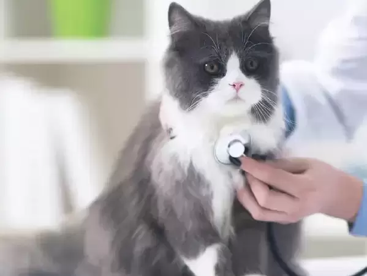
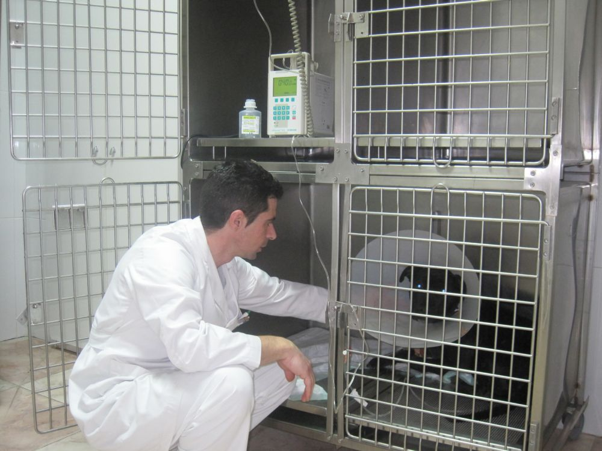

Clínica
Ofrecemos atención médica completa para gatos y perros, asegurando su bienestar y salud.

Radiología
Nuestro servicio de radiología permite diagnósticos precisos para tratamientos efectivos.
Diagnóstico por Imágenes
Utilizamos tecnología avanzada para obtener imágenes detalladas del estado de salud de tu mascota.

Internación
Contamos con instalaciones cómodas y seguras para la internación de gatos y perros en recuperación.

Cardiología
Ofrecemos diagnósticos y tratamientos especializados para problemas cardíacos en mascotas.